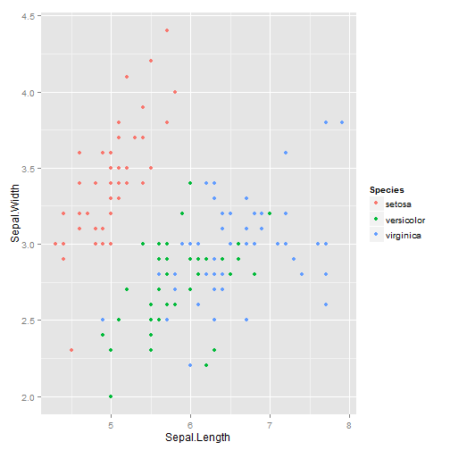
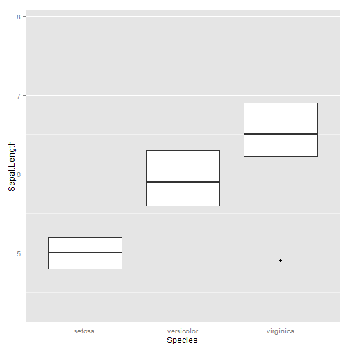

- Package from RStudio (http://shiny.rstudio.com/)
- Interactive analysis of data
- Stand-alone applications and dashboards
if (!require("devtools"))
install.packages("devtools")
devtools::install_github("rstudio/shiny")
Vivek Patil
Associate Professor of Marketing, Gonzaga University
if (!require("devtools"))
install.packages("devtools")
devtools::install_github("rstudio/shiny")
Two files
Sepal length and width and Petal length and width of 50 flowers from each of 3 species of iris - setosa, versicolor, and virginica
head(iris,5)
## Sepal.Length Sepal.Width Petal.Length Petal.Width Species
## 1 5.1 3.5 1.4 0.2 setosa
## 2 4.9 3.0 1.4 0.2 setosa
## 3 4.7 3.2 1.3 0.2 setosa
## 4 4.6 3.1 1.5 0.2 setosa
## 5 5.0 3.6 1.4 0.2 setosa
# tail(iris,n)
# iris
summary(iris)
## Sepal.Length Sepal.Width Petal.Length Petal.Width
## Min. :4.30 Min. :2.00 Min. :1.00 Min. :0.1
## 1st Qu.:5.10 1st Qu.:2.80 1st Qu.:1.60 1st Qu.:0.3
## Median :5.80 Median :3.00 Median :4.35 Median :1.3
## Mean :5.84 Mean :3.06 Mean :3.76 Mean :1.2
## 3rd Qu.:6.40 3rd Qu.:3.30 3rd Qu.:5.10 3rd Qu.:1.8
## Max. :7.90 Max. :4.40 Max. :6.90 Max. :2.5
## Species
## setosa :50
## versicolor:50
## virginica :50
##
##
##
library(ggplot2)
ggplot(iris,aes(x=Sepal.Length,y=Sepal.Width,color=Species))+geom_point()

ggplot(iris,aes(x=Species,y=Sepal.Length))+geom_boxplot()

head, tail, or just the entire data)summary)Off-the-shelf widgets for inputs: http://shiny.rstudio.com/gallery/widget-gallery.html
# The 5th variable in the iris dataset is not numeric - Species - Not a choice option
selectInput("xvar", "x-variable:", choices=names(iris[,-5]))
selectInput("yvar", "y-variable:", choices=names(iris[,-5]),selected = names(iris[2]))
selectInput("dvar", "Distribution of which variable for box plot?", choices=names(iris[,-5]), selected = names(iris[3]))
sliderInput("Sepal.Length", label = "Sepal.Length", min = min(iris$Sepal.Length), max = max(iris$Sepal.Length),
value=c(min(iris$Sepal.Length),max(iris$Sepal.Length)))
sliderInput("Sepal.Width", label = "Sepal.Width", min = min(iris$Sepal.Width),
max = max(iris$Sepal.Width), value = c(min(iris$Sepal.Width),max(iris$Sepal.Width)))
sliderInput("Petal.Length", label = "Petal.Length", min = min(iris$Petal.Length),
max = max(iris$Petal.Length), value = c(min(iris$Petal.Length),max(iris$Petal.Length)))
sliderInput("Petal.Width", label = "Petal.Width", min = min(iris$Petal.Width),
max = max(iris$Petal.Width), value = c(min(iris$Petal.Width),max(iris$Petal.Width)))
Source: http://shiny.rstudio.com/tutorial/lesson4/
| Output function | Output |
|---|---|
| htmlOutput | raw HTML |
| imageOutput | image |
| plotOutput | plot |
| tableOutput | table |
| textOutput | text |
| uiOutput | raw HTML |
dataTableOutput(outputId="subsetdata")
To present an interactive table of the entire data using the jQuery library DataTables
verbatimTextOutput("summary")
For a verbatim textOutput of the summary function
plotOutput("scatterplot")
plotOutput("boxplot")
For each of the two plots - the scatter plot and the box plot
Code of this intermediate app: https://github.com/patilv/INRUG-ShinyUI
ggplot2 package and ship this off to "scatterplot" in ui.rggplot2 and ship this last piece off to "boxplot" in ui.rDon't forget, the input variable names in the server should be the same ones the ui.r is sending to it.
dataset that is reactive to the inputs from the 4 sliders dataset=reactive(iris[(iris$Sepal.Length>=input$Sepal.Length[1] & iris$Sepal.Length<=input$Sepal.Length[2]&
iris$Sepal.Width>=input$Sepal.Width[1] & iris$Sepal.Width<=input$Sepal.Width[2]&
iris$Petal.Length>=input$Petal.Length[1] & iris$Petal.Length<=input$Petal.Length[2]&
iris$Petal.Width>=input$Petal.Width[1] & iris$Petal.Width<=input$Petal.Width[2]),])
More information on "reactivity" can be found here: http://shiny.rstudio.com/articles/reactivity-overview.html
Source: http://shiny.rstudio.com/tutorial/lesson4/
| Render function | Creates |
|---|---|
| renderImage | images (saved as a link to a source file) |
| renderPlot | plots |
| renderPrint | any printed output |
| renderTable | data frame, matrix, other table like structures |
| renderText | character strings |
| renderUI | a Shiny tag object or HTML |
output$subsetdata <- renderDataTable(dataset(),options=list(pageLength=10)) # for Data table
output$summary <- renderPrint(summary(dataset()))
output$scatterplot=renderPlot(ggplot(dataset(),aes_string(x=input$xvar, y=input$yvar,color="Species"))+ geom_point()+ggtitle("Scatter Plot"))
output$boxplot=renderPlot(ggplot(dataset(),aes_string(x="Species",y=input$dvar))+ geom_boxplot()+ ggtitle("Box Plot"))
dataset()aes_string instead of aes in our ggplot creationsCode for final app: https://github.com/patilv/INRUG-ShinyFinal
App in new window: https://patilv.shinyapps.io/INRUG-ShinyFinal/
Source: http://shiny.rstudio.com/tutorial/lesson7/
if {R and shiny available on computer} {
runGist("460f7ee20def9a506714"))runGitHub("INRUG-ShinyFinal","patilv"))} else {
}
This presentation was created using slidify and the code for it can be found at: https://github.com/patilv/INRUG-Shiny